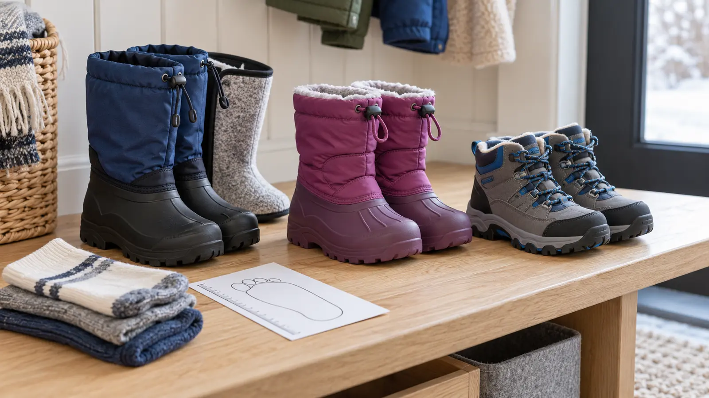

Removable-liner pac boot
Fits: deep snow, standing and repeated wet winter play when the maker’s shell, liner and gaiter system match the use. Tradeoff: bulk, weight, heel movement and a liner that must be removed and fully dried.
WINTER GEAR · FIT FIRST · AUTHORITY-EXPANSION
Warmth starts with the forecast, activity and dry fit—not the biggest insulation number. Bring the real sock, test the closure, and reject any boot that changes the child’s walk.

Write the real job: twenty minutes at a bus stop, two hours of sledding, a packed-snow trail, a wet playground or ordinary school recess. Note the expected temperature, wind, precipitation, standing time, walking distance, indoor transitions and drying window before the next use. The National Weather Service says to check the forecast, adjust schedules around extreme cold and be especially cautious with children. Its wind-chill guidance is a starting point, not a guarantee for a child.
A heavy boot may help during slow snow play and punish a long walk. A lower winter hiker may walk well and admit deep snow. A tall flexible boot may be easy to pull on and allow heel lift. The useful question is not “Which is warmest?” It is “Which category fits this child, sock, closure, surface and day without creating a new problem?”
Bring the intended sock, not the thickest sock in the drawer. The kids’ sock guide explains why fiber, thickness, wrinkles and shoe volume work as a system. Put socks on smooth and dry. Have the child stand and walk. Ask where the foot moves and feels pressure instead of asking only “Does it fit?” Young children may say yes to end the fitting.
After ten minutes, remove both boots and socks. Check for persistent red pressure areas, dampness, bunched fabric or toe marks. This is an ordinary compatibility check, not a diagnosis. Pain, numbness, unusual color or repeated cold feet requires stopping and, when appropriate, medical advice. Do not solve poor fit by adding a second sock unless the boot and manufacturer’s instructions support the actual combination.
Read exactly where the manufacturer says the boot is waterproof and under what conditions. A waterproof molded lower does not make the cuff, tongue or closure watertight. Seam-sealed construction is a specific maker claim, not a conclusion from appearance. Deep slush can enter over the top of any boot. Snow pants and boot gaiters must overlap according to their own instructions.
If the outing is mostly rain and shallow puddles above freezing, the existing rain-boot guide may be the better category. If it is sustained trail walking, compare the hiking-footwear fit framework. One boot does not have to win every season.
Insulation weight is a construction detail, not a universal comfort temperature. Manufacturers may publish model-specific temperature guidance, but metabolism, sock, moisture, wind, activity, fit and time all change the outcome. Compare like information only when the maker defines it. Do not turn “200 g” or “400 g” into a child-safety promise.
The National Weather Service advises dressing in layers, staying dry, covering extremities and limiting exposure in dangerous cold. It notes that wind chill is based on adult testing and recommends extra caution with children. The adult sets a return-to-warmth time, checks feet during the outing and carries a dry sock plan. The child does not have to earn the right to go inside.
Outsole lugs, rubber compounds and flex differ, and a marketing phrase such as “grippy” does not guarantee traction on polished ice. Test ordinary walking control on a safe surface. Use cleared and treated routes, handrails and local closures. If dedicated traction devices are considered, verify the boot and device manufacturer’s compatibility and supervise use; a device can alter gait, snag indoors or damage surfaces.
For sledding, the hill gate still controls. Boots do not make a hill with traffic, trees, fences, water, a drop or poor runout acceptable. For a winter hike, the weather cutoff and route conditions control before footwear.
Remove loose snow outside. Follow the exact maker’s instructions for liner and insole removal, cleaning, drying temperature and storage. Direct heat can damage adhesives, foams, membranes, rubber or liners and can create a fire risk. Do not place boots on a heater, stove or other unapproved heat source. Use the boot-dryer material gate before adding equipment; its no-buy test begins with airflow and time.
Label each liner and insole so pairs stay together. Check inside with a hand for dampness before the next use. A dry-feeling shell can hide a wet toe box or liner. If the boot cannot dry on the family’s real schedule, that is a compatibility failure even when the fit and price look good.
No-buy first: inspect the owned winter boot under bright light, measure the current foot, use the intended sock and run the clean walk test. If fit, tread, closure, water protection and drying still match the day, use it. Borrow only when the exact pair can be inspected, fitted and cleaned according to its maker.
Pac boot: the child faces deeper snow or more standing, the liner fits securely and the household will remove and dry it. One-piece snow boot: the family needs a straightforward school-and-play boot and the child can control its closure. Winter hiker: the day is more walking than wallowing and the lower height still manages snow with the clothing system. Skip all three: when the forecast, route or exposure is the real failure.
Reviewed October 24, 2026 by Mr Adventure Dad Editorial Desk using National Weather Service cold-weather preparation and wind-chill guidance, current CPSC recall search, and current manufacturer pages showing that waterproof boundaries, insulation weights, closures, weights, size guides and care vary by exact model. The category matrix, sock test and buying rules are editorial compatibility tools, not product tests, medical advice or warmth certification. Commercial links use generic protected category searches and do not endorse an exact boot. Report sourced corrections through About.
MAKE THE WEEK COUNT
Build the plan your family can finish well, then leave enough energy for the next part of the day.
More family plansTHE USEFUL STUFF
These are practical categories to compare—not a reason to overpack. Check fit, specifications and current reviews before buying.
Paid links: As an Amazon Associate I earn from qualifying purchases. You pay no additional cost.
Check both-foot sizing with the real sock, heel security, shell and liner instructions, gaiter closure, loaded walking comfort, drying time and the maker’s exact water-protection claim.
See current options → COMPARE ON AMAZONCompare the exact waterproof boundary, insulation, closure independence, weight, snow-pant interface, current size chart, drying method and recall status.
See current options → COMPARE ON AMAZONChoose for walking only after checking heel hold, toe room, flex, outsole, boot height, maker-stated insulation and water protection, and the child’s clean indoor gait test.
See current options →